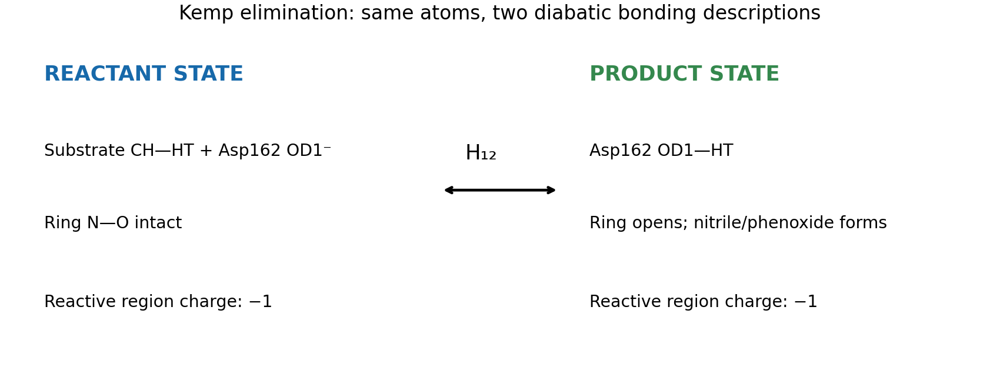

Molecular dynamics (MD)
MD follows atoms as they move. In ordinary classical MD, the bond pattern is fixed, so bonds cannot break or form during the simulation.
MD follows atoms as they move. In ordinary classical MD, the bond pattern is fixed, so bonds cannot break or form during the simulation.
QM/MM treats the reacting atoms with quantum mechanics and the surrounding protein and solvent with a classical model. It can describe bond changes, but the quantum calculation costs more at every step.
EVB describes the same atoms with separate classical energy models for different bonding patterns, such as reactant and product. It couples those models so the system can move between them. The model is calibrated against suitable reference data.
EVB begins with a classical energy model for the reactant bonding pattern and another for the product bonding pattern. Both describe the same atoms in the same protein and solvent environment; what differs is the chemical bonding and its force-field parameters. At each sampled geometry, the model evaluates both descriptions.
The coupling H₁₂ lets the two descriptions mix. Near the point where their energies approach one another, this mixing makes the lower EVB energy change smoothly from reactant-like to product-like. Sampling these energies across molecular configurations gives a free-energy profile.
α shifts the product-state energy relative to the reactant. This can move where the two descriptions meet and change the product-versus-reactant free energy.
H₁₂ sets the strength of mixing. Stronger coupling widens the energy separation around the crossing and changes the shape of the lower EVB surface. The resulting barrier depends on both energy curves and the sampling.
α and H₁₂ are model parameters, not barrier values. In the EVB approach, the reaction model is calibrated against known reference data, then used to study how the surrounding solution or enzyme changes the reaction free energy. The activation barrier is obtained from the sampled free-energy profile. This follows Åqvist and Warshel’s description of EVB.
The workshop scan shows 25 parameter combinations, including the archived baseline, plus five barrier-matched examples to give a barrier near the paper’s reported value. Compare their plotted profiles and reaction free energies. Several parameter pairs can give a similar barrier but very different product energies, showing why one barrier alone cannot determine both parameters.
The scan reuses saved OpenMM energy samples while changing α and H₁₂; it does not run a new simulation for every choice.
Background: Åqvist and Warshel (1993), EVB review; Kamerlin and Warshel (2010).
The example is the Kemp reaction studied in the paper. The substrate is the molecule the enzyme acts on. Asp162, part of the enzyme, accepts a proton (a hydrogen nucleus) from it. As the C–H bond breaks, a bond in the substrate's small ring breaks too, opening the ring and forming the products.

Substrate carbon that initially bears Ht. In the product it is part of the new nitrile group.
The transferable hydrogen (proton) that moves from C3 to Asp162.
O1 and N2 are the oxygen and nitrogen in the substrate ring. Their N2–O1 bond breaks as the ring opens.
Asp162 means the enzyme's aspartate residue at position 162. OD1 is one of the two oxygen atoms in its side-chain carboxylate. It accepts Ht and becomes protonated in the product state. These labels identify atoms in the reaction scheme; they are not EVB parameters.
The substrate still holds the proton. Asp162 is ready to accept it.
Asp162 now holds the proton, and the substrate has the ring-opened product structure.
This workshop treats proton transfer and ring opening as linked changes between the reactant and product descriptions. The exercise does not add a separately simulated intermediate.
The paper reports an activation free-energy barrier for the Kemp reaction. The Q6 estimate highlighted here is 13.2 ± 0.6 kcal/mol (the spread is the standard deviation across replicas). This is a barrier estimate, not a complete free-energy curve.
Read the paper and supporting informationThis is a short, 21-window OpenMM example. Its plotted peak is about 9.6 kcal/mol. The curve is included to show how a sampled EVB profile is displayed.
Open the saved profile
Install Git and Conda or Miniforge. From a terminal:
git clone https://github.com/ND7996/Kemp-EVB-Workshop.git cd Kemp-EVB-Workshop conda env create -f kemp_evb/calculation/environment.yml conda activate kemp-short python kemp_evb/calculation/scripts/run_short_evb_demo.py --check python kemp_evb/calculation/scripts/run_short_evb_demo.py
The run uses a CPU and saves a browser plot plus JSON summary under kemp_evb/calculation/runs/. Open the HTML file in a browser.
This optional Linux calculation is separate from the browser parameter scan. The scan uses saved energies; this command runs the calculation described in the Linux guide.
The browser activities use saved examples. A full calculation has three separate stages. Each stage checks something different before you move on.
Start from the Kemp enzyme and substrate. Make reactant and product descriptions with the same atoms and atom order. Assign each state's bonds, charges, force-field terms, and EVB settings; check the mapping, total charge, proton position, solvent, and ions.
Minimize the reactant mapping state, then heat and equilibrate it. Check the geometry, energy and temperature before starting the window calculations. In this OpenMM workflow, relaxation and heating are performed at the reactant endpoint.
Map between the R and P energy descriptions through lambda windows. Sample every window, check overlap and convergence, and compare independent replicas. Analyze the energies to estimate the profile, activation barrier, and reaction free energy.
The files in this workshop include a saved short Kemp dataset for learning the analysis. They do not include the complete live R/P preparation, endpoint-relaxation, and FEP run scripts. The viewers therefore do not launch those three simulation stages.
General recipe versus this implementation: independent endpoint relaxation is a useful general preparation route. The current full-enzyme OpenMM driver specifically relaxes λR=1, heats/equilibrates there, then traverses mapping windows. It must not be described as having independently relaxed both endpoints.
The deposited starting structures were minimized with Amber22 before preparation for Q6. The archive supplies prepared coordinates, topology and a Q reaction definition. The OpenMM adaptation imports those supplied files; it does not repeat the full original Amber preparation.
| Stage | Published Q6 setup | OpenMM adaptation |
|---|---|---|
| 1 · Prepare states | Coordinates, topology, OPLS-AA/TIP3P parameters and a Q FEP definition describe the enzyme, solvent and reactant/product chemistry. | Read the supplied topology, coordinates and FEP changes. Keep atom order consistent, build matching reactant and product systems, map the reactive atoms, convert units and Lennard-Jones conventions, and check charges and reactive bond changes. |
| 2 · Define the EVB/FEP model | The FEP definition lists state-dependent charges, bonds, angles, torsions, impropers and exclusions. It defines the model; it is not a trajectory. | Apply the state changes to the OpenMM systems, register the reactive terms and atom mapping with EVBOpenMM, and check that the listed forming and breaking bonds agree with the source. |
| 3 · Relax | The supplied preparation includes Amber minimization and Q relaxation inputs. Some archived templates are incomplete, so the archive is not a single ready-to-run sequence. | Hold the reactant state, minimize with bounded force descent and optional L-BFGS, then record energy and force diagnostics. The short configuration allows up to 200 iterations for each minimization stage and a 0.0005 nm maximum descent displacement. |
| 4 · Heat and equilibrate | The paper reports 30 ns equilibration per replica before production mapping runs. | The short example heats through 50, 150 and 300 K for 200 steps at each temperature, then runs 1,000 steps at 300 K. It uses Langevin dynamics, a 0.25 fs step and 1 ps⁻¹ friction. |
| 5 · Sample mapping windows | The published Qdyn protocol uses 51 windows of 200 ps and 30 independent replicas per case. The energy files are analyzed with QFEP. | The short example uses one seed and 21 windows from reactant to product. Each window has 200 equilibration steps and 1,000 production steps; both state energies are saved every 20 steps (50 samples per window), along with trajectories and restart data. |
| 6 · Build the profile | QFEP combines window energies with coupling and offset parameters, binning and reweighting. | The OpenMM analysis connects windows using forward/reverse free-energy checks, mixes the EVB energies per frame, and inspects overlap and empty bins before constructing the profile. |
The short OpenMM settings are an engineering-scale example, not the paper’s 30 ns equilibration and multi-replica production. The current full-enzyme driver relaxes the reactant mapping state (λR=1), heats and equilibrates there, then traverses the mapping windows; it does not independently relax both endpoints.
In the full-enzyme configuration, the main settings are endpoint equilibration steps, per-window equilibration and production steps, the λ schedule, sampling interval and random seed. Use a new output directory for a changed run. More steps alone do not guarantee convergence.
Linux setup for live calculations
Paper: Listov et al., “Complete computational design of high-efficiency Kemp elimination enzymes,” Nature (2025). Open the paper · Deposited simulation inputs.